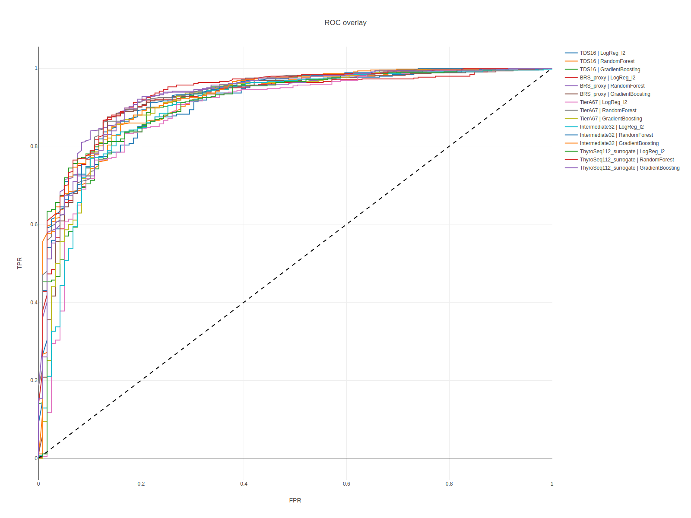
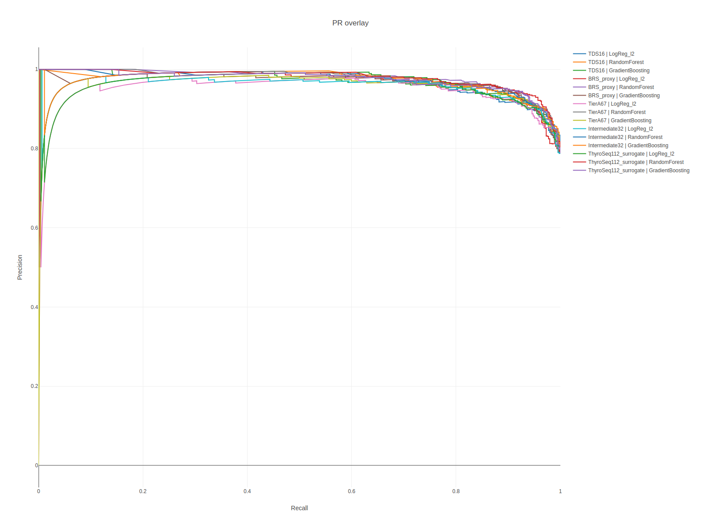
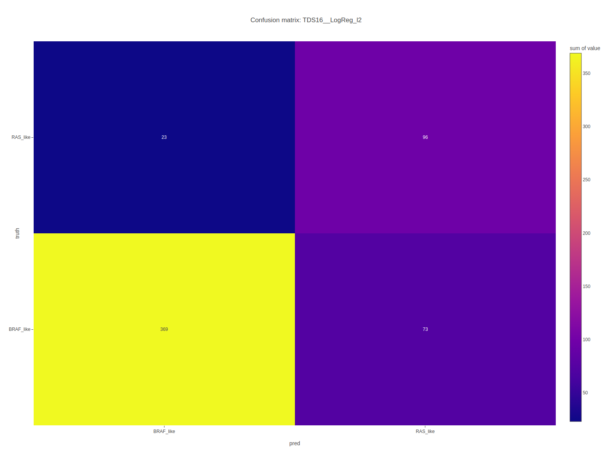
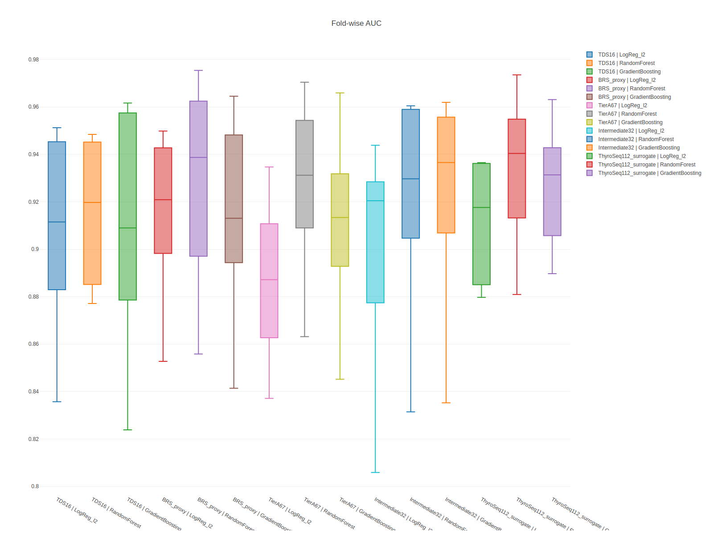

07 / ML BASELINE
ML baseline | THCA Multi-Omics Dashboard
ROC, PR, confusion matrix, calibration, fold-wise AUC를 한 페이지에서 확인합니다.
ROCPRCalibration
이번 baseline의 정확한 정의
무엇을 예측하는 문제인가
이번 baseline의 정확한 정의
Task
- 입력: 샘플 하나의 유전자 발현 프로파일(패널 내 유전자만).
- 출력: BRAF_like vs RAS_like 이진 분류 확률.
라벨은 어떻게 주어지나
- TCGA-THCA는 공식 molecular subtype 주석이 있음 → 그대로 사용.
- 외부 GEO는 논문/supplementary의 annotation 또는 histology proxy로 부여.
unknown/normal/dediff샘플은 이번 baseline에서는 제외합니다.
모델
- 로지스틱 회귀(
LogReg_l2) + 표준화. Baseline으로 의도적으로 단순화했습니다. - 5-fold stratified CV, stratification 기준은 dataset × label.
왜 이렇게 단순한가
- 단순한 모델이 재현하기 쉽고, 외부 일반화 성능의 바닥을 정직하게 보여줍니다. 복잡한 모델은 이후 단계에서 비교합니다.
training backbone
TCGA-THCA
BRAF_like vs RAS_like
best internal
1.000
TierA67_clean / LogReg_elasticnet
best external
1.000
GSE126698 / TierA67_clean
realistic external
0.980
GSE27155 / n=72
과대해석 금지
- TCGA 내부 CV가 1.0에 가깝게 나오는 조합이 있어도 feature space와 mutation-anchor label 정의가 강하기 때문에 낙관적일 수 있습니다.
- GSE126698 external AUC는 높지만 n=12여서 안정적 일반화 근거로 보기 어렵습니다.
- GSE27155는 histology proxy binarization이라 true molecular external validation이 아닙니다.
곡선 기반 평가
두 곡선이 보여주는 다른 진실
ROC와 PR 곡선 완전 정복
ROC curve
- 가로축 FPR (False Positive Rate) = 음성을 잘못 양성이라고 부른 비율.
- 세로축 TPR (True Positive Rate, Recall) = 진짜 양성을 양성이라고 부른 비율.
- 임계값(threshold)을 0→1로 움직이며 점을 찍어 곡선을 만듭니다.
AUC 해석
AUC = 0.5→ 완전 무작위.AUC = 1.0→ 완벽 분리.0.8~0.9→ 실용적,>0.95→ 외부 검증에서 무너질 수 있으니 재현성 확인 필수.
PR curve (Precision-Recall)
- 가로 Recall, 세로 Precision.
- 양성 클래스가 희소할 때 ROC보다 더 정직한 그림을 줍니다.
- PR-AUC = average precision.
한 줄 규칙
- 클래스 balance가 맞을 땐 ROC, 한쪽이 10% 이하로 드물 땐 PR을 우선 보세요.
ROC와 PR은 전체 모델을 한 그림에서 켜고 끌 수 있게 overlay했습니다. calibration은 예측 점수의 확률 해석이 얼마나 안정적인지 확인하는 용도입니다.

ml roc overlay
페이지 안에서는 PNG preview를 기본으로 먼저 보여주고, 아래 접힘 패널에서 Plotly 인터랙티브 버전을 바로 확대해서 볼 수 있습니다.

ml pr overlay
페이지 안에서는 PNG preview를 기본으로 먼저 보여주고, 아래 접힘 패널에서 Plotly 인터랙티브 버전을 바로 확대해서 볼 수 있습니다.
요약 성능
메트릭 정의와 읽는 순서
요약 성능 표 한 줄 한 줄
각 메트릭
- ROC-AUC: threshold 독립적 랭킹 품질.
- PR-AUC (AP): 희소 양성에서 랭킹 품질.
- Balanced accuracy:
(TPR + TNR) / 2. 클래스 불균형이 있어도 공정. - F1: precision과 recall의 조화 평균, 0~1.
- MCC (Matthews Correlation Coefficient): −1~1, 클래스 불균형에 가장 강건한 메트릭.
- Brier score:
mean((p − y)^2). 낮을수록 잘 calibrated. 0.25 = 무의미한 예측, 0.0 = 완벽.
읽는 순서
- ROC-AUC로 전반 순위 확인.
- Balanced accuracy/MCC로 threshold 부근 품질 확인.
- Brier로 확률 자체가 믿을 만한지 확인.
주의
- 단일 fold의 값에 과하게 의존하지 말고 CV 평균 ± SD를 같이 보세요.
confusion matrix는 최고 성능 모델 기준, fold AUC boxplot은 CV 분산, comparison bar는 feature set과 모델 조합의 평균 성능을 비교합니다.

ml confusion best
페이지 안에서는 PNG preview를 기본으로 먼저 보여주고, 아래 접힘 패널에서 Plotly 인터랙티브 버전을 바로 확대해서 볼 수 있습니다.

ml cv boxplot
페이지 안에서는 PNG preview를 기본으로 먼저 보여주고, 아래 접힘 패널에서 Plotly 인터랙티브 버전을 바로 확대해서 볼 수 있습니다.
Threshold metrics
결정 임계값이 성능을 결정합니다
Threshold metrics 왜 중요한가
threshold란
- 모델이 출력하는 확률
p ∈ [0,1]을 "양성"으로 부르는 기준값입니다. - 기본값은 0.5이지만 이게 최적이라는 보장은 없습니다.
Youden J
J = TPR − FPR이 최대가 되는 threshold.- 민감도와 특이도의 균형점으로, 의료 스크리닝에서 자주 쓰입니다.
Balanced accuracy가 threshold에 따라 반전하는 이유
- threshold가 너무 낮으면 모두를 양성으로 불러 TPR=1이지만 TNR=0.
- 너무 높으면 반대로 TNR=1이지만 TPR=0.
- 최적값은 보통 0.3~0.6 구간에서 중간 어딘가에 있습니다.
표 읽는 팁
- 같은 AUC라도 임상적 의사결정은 threshold를 어떻게 잡느냐에 따라 크게 달라진다는 점이 핵심입니다.
Interactive threshold explorer
슬라이더로 직접 확인하기
Interactive threshold explorer 쓰는 법
단계별 사용법
- 모델과 데이터셋을 드롭다운에서 선택합니다.
- 슬라이더를 움직이면 실시간으로 다음 값이 갱신됩니다: TPR, FPR, Precision, F1, Balanced accuracy, MCC.
- confusion matrix 타일이 색을 바꿔 잘/틀림 분포를 보여줍니다.
무엇을 확인하면 좋나
- threshold를 조금만 밀어도 F1/MCC가 크게 흔들린다면, 모델 확률이 calibrated되지 않았을 가능성이 있습니다.
- 임상 목적이 "양성 놓치지 않기"라면 TPR 우선, "헛 양성 최소화"라면 Precision 우선으로 threshold를 골라야 합니다.
팁
- 슬라이더 아래 숫자 입력란에 값을 직접 넣을 수도 있습니다. 0.5가 기본이지만 Youden J에서 제안한 값을 넣어 비교해 보세요.
피쳐셋 · 모델 · 코호트를 바꿔가며 decision threshold를 직접 끌어보세요. 95% bootstrap CI, PR-AUC, Brier score, Youden 최적 임계치를 실시간으로 반영합니다.